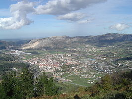
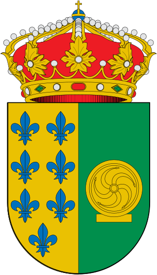

Corrales |
|
|
Los Corrales de Buelna es un municipio y localidad española de Cantabria asentado junto en la cuenca del río Besaya a 12 kilómetros de la ciudad de Torrelavega.Es un municipio moderno que cuenta con instalaciones deportivas, dispone también de varios centros educativos de Educación Infantil y Primaria, así como dos Institutos de Educación Secundaria y el Colegio La Salle con más de ciento veinticinco años de experiencia.
Son importantes para la economía local las industrias metalúrgica y química, la avicultura, la ganadería y agricultura.
 |
Podeis visitar una pequeña reseña de algunas ciudades en los siguientes enlaces:  TorrelavegaComillasCorralesMenú principal |